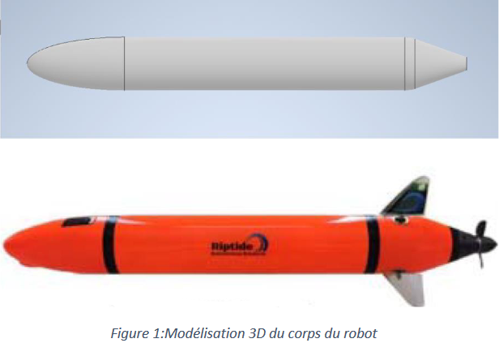
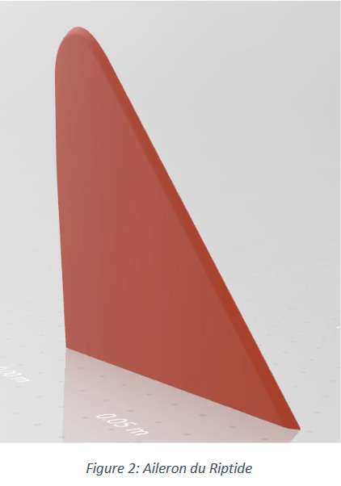
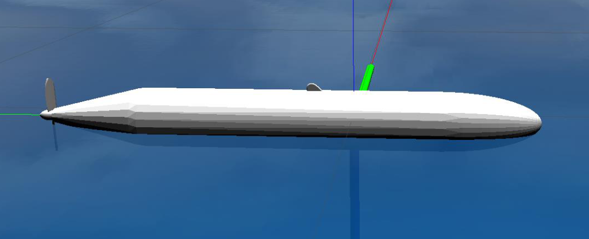
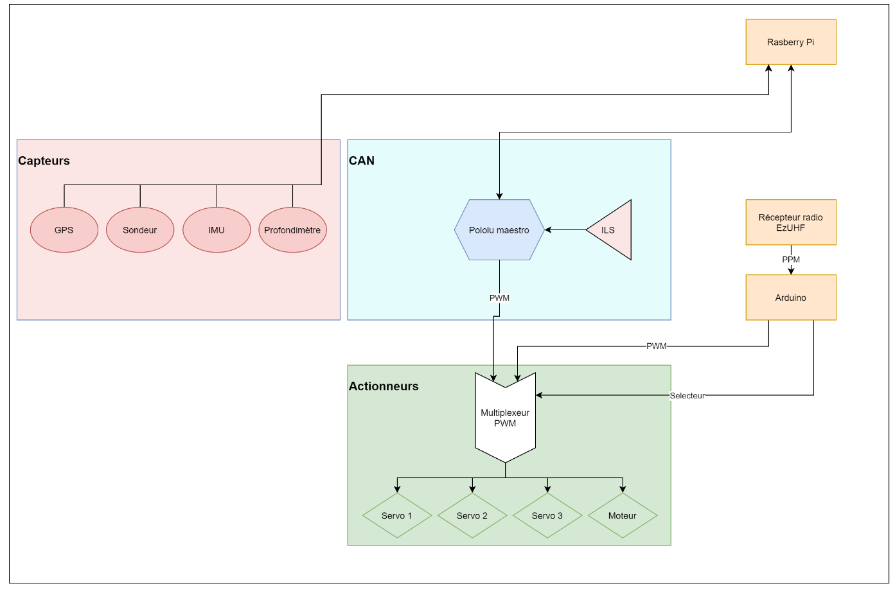

Fait le 16/11/2020
Prise en main du code existant et passage sous python3
Contrôleur python avec suivi d’une liste de waypoints en partie sous ROS
Fait le 25/11/2020
Aujourd’hui nous avons avancé le passage sous ROS du contrôleur en respectant l’architecture déjà existante. Nous avons fait face à plusieurs problèmes sur la mise en œuvre de certains publishers. On prévoit maintenant de faire un observateur d’état en utilisant les données sous ROS avant de les renvoyer au contrôleur.
Fait le 14/12/2020
Aujourd'hui, nous avons continué le passage sous ROS du riptide. Nous nous sommes occupés de la partie mission du projet. Avec la mise en place de waypoints, de lecture de fichier Json. Le nœud Ros Mission permet d’envoyer les waypoints sous la forme de geometry_msgs/Points. De plus, nous nous sommes intéressés au traitement des données reçues par les capteurs.
Fait le 06/01/2021
Mise en commun des travaux avec l’ensemble des sous-groupes du projet Riptide.
Etude et bilan de la partie simulation.
Recherche et adaptation de la partie ROS avec la partie Gazebo: la simulation demandant en entrée les différentes consignes des moteurs, nous avons adapté la partie ROS pour publier les bonnes informations nécessaires au bon fonctionnement de la simulation.

Une fois, la partie ROS finie. Nous avons travaillé sur un moyen de lancer les nœuds ROS plus facilement. Pour cela, nous avons mise en place un fichier launch. Problèmes rencontrés lors de la mise en place de ce fichier dû à un caractère de fin de ligne Windows qui posait problème pour Linux
Le fichier launch permet donc de lancer les différents nœuds ROS et prend en argument le chemin du fichier json (qui décrit la mission).
Fait le 16/11/2020
Simulation d’un AUV quelconque sur Gazebo
Ajout de capteurs sur Gazebo
Ajout de thrusters sur Gazebo
Modélisation 3D du Riptide (corps et ailerons) sur CAO.
Fait le 25/11/2020
Cette semaine nous nous sommes focalisés sur la création d’un AUV pour le plugin UUV Simulator de Gazebo. Cela comprend l’analyse des besoins d’informations sur le Riptide aussi bien sur la partie mécanique (matrice d’inertie, volume, masse) que sur la partie capteurs/actionneurs qu’il va falloir modéliser. Cela nécessite pour nous une revue des possibilités de Gazebo et du plugin UUV Simulator pour savoir comment implémenter les capteurs et actionneurs ainsi que les informations nécessaires au simulateur.
Apprentissage de Gazebo et de ses possibilités
Prise en main de Gazebo et UUV Simulator
Notion de fichiers .world, .urdf, .xacro...
Réalisations de tutoriels pour apprendre à utiliser le logiciel
Etude du logiciel en essayant ses fonctions
Plugins pour les capteurs et pour les actionneurs
Découverte et choix des plugins modélisant les actionneurs
Découverte et choix des plugins modélisant les actionneurs
Comment les implémenter sur un AUV et les utiliser ?
Commande actionneur ?
Retour capteur ?
Lancement de la modélisation du Riptide sur Gazebo
Nous avons commencé par la modélisation 3Ddu robot qui comprend le corps, les ailerons et le propulseur.


En parallèle nous avons créé le plugin du Riptidesur gazebo. Il comprend les liens vers les actionneurs, les capteurs, mais aussi le modèle physique (masses, matrice d’inertie, modèle hydrodynamique...). Nous avons implémenté le modèle 3D dans le plugin, il faut maintenant synchroniser les actionneurs et les capteurs avec ce modèle 3D.

Fait le 14/12/2020
Finir la modélisation du Riptide (positions relatives et commande du propulseur et des ailerons)

Fait le 06/01/2021
Modélisation finale du Riptide : ajout des ailerons et des capteurs.

Gestion de la flottaison du Riptide :
A l’aide du principe d’Archimède, nous avons calculé la masse du Riptide dans le cas où celui ci est en équilibre dans l’eau. Ainsi nous avons pu déterminer la masse du Riptide à rentrer dans gazebo afin que celui-ci flotte.
Test de commande du Riptide sous Rqt:
Envoi de commande (directement sur les topics via Rqt) au propulseur et aux ailerons.
Vérification de la manœuvrabilité de l’AUV.
Point avec Paul et Julien pour se mettre d’accord sur les topics utilisés et la forme des messages que l’on se transmettra mutuellement entre notre simulation Gazebo et leur contrôleur sous ROS.
Fait le 16/11/2020

Architecture matérielle :
Pour effectuer des tests sur la partie matérielle, nous allons ajouter une télécommande pour piloter le robot. Comme les récepteurs ne nous permettent pas d’avoir suffisamment de voies pour contrôler l’ensemble des actionneurs (+sélecteur), nous allons rajouter une arduino (pour utiliser les 12 voies du PPM). Ceci a l’avantage de permettre un contrôle plus facile et intuitif pour commander le Riptide en nous permettant de mixer plus facilement les voies. Pour démarrer/arrêter le système, nous partons sur un interrupteur magnétique ILS.
Commande du matériel :
mail envoyé à M. Le Bars et M. Fourniol
Fait le 25/11/2020
Réflexion sur la mise en place d’une interface haut niveau (interface web) en node js qui sera liée au contrôleur ROS dans le but de suivre l’état de l’AUV à distance et de lui envoyer des waypoints.
Changement du capteur de pression (illustration ci-dessous):
Détachement de l’ancien capteur
Fraisage d’un trou pour le nouveau capteur dans la coque de l’AUV
Insertion du capteur bar30 de BlueRobotics
Test de l’étanchéité du capteur.

De plus nous avons travaillez sur l’implémentation d’un code permettant la reprise à distance de l’AUV via une télécommande.
Fait le 06/01/2021
Test du capteur de pression :
Soudure des câbles sur les connecteurs
Intégration sur le bus I2C de la raspberry pi 4 du Riptide
Installation de la librairie ‘’ms5837-python’’
Lecture des données du capteur